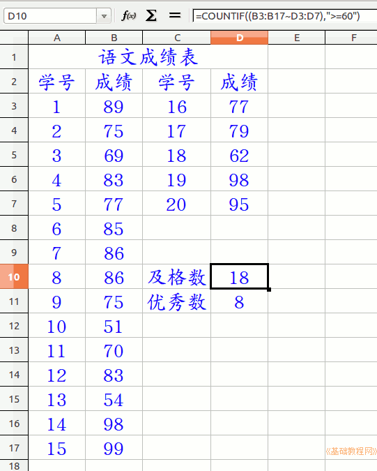

2015-2016 第一学期七年级电子表格和音视频编辑教学设计
作者：TeliuTe 来源：基础教程网
九、 返回目录 下一课
（一）教学设计
1、学习目标：
2、注意事项：绕过弯来，既不要跳也不要落，一楼过了二楼
3、教学过程：
1）教师准备学案和板书；
2）学生整队进入，开机抄黑板上笔记；
3）教师讲解板书演示操作；
4）学生打指法、日志、完成操作；
5）教师打勾记录学生指法成绩，检查日志和操作；
注：学生抄完笔记就开始打指法、日志，老师讲完后再继续完成；
操作图示：

（二）板书设计(学生笔记)、课后记
09学会统计及格人数
1.表头，两列20人
2.用countif函数
3.参数用键盘输入
4.编辑栏里检查函数
第9课 学会统计及格人数
1.表头，填充20人成绩，15+5两列
2.用统计函数countif，键盘输入
3.(a3:a17,b3:b7)表示单元格
4. ">=60" 优秀用85
--
2016年03月25日 星期五 12:55
--
想练一下ctrl和shift谁知道calc不支持
只好改一下练练键盘和多选了
--
操作有些是通用的，想单个选择和多选这些快捷键
练练countif函数也好
--
还可以，不用拖的或复制的方法，
就一个函数一个函数的输入，要不容易搞错
--
用英文的来输，中文用默认皮肤，扫一眼三个按钮
学生对分数还是挺重视，毕竟关心则乱
--
有个课代表算成绩，用计算器
之前换成二进制了，让回到十进制
--
讲的时候，在继续的地方说一下函数的意思
函数是把及格的人数统计出来
返回目录 下一课
本教程由86团学校TeliuTe制作|著作权所有
基础教程网：http://teliute.org/
美丽的校园……
转载和引用本站内容，请保留作者和本站链接。